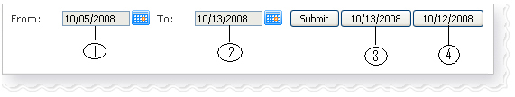

大部分的报告包含以下的控制日期范围 (选择)。

图 1
- [1] 从日期: 选择报告的开始日期。
- [2] 到日期: 选择报告的结束日期。
- [3] 当前日期: 快捷键以查看当前的报告。
- [4] 昨日报告: 快捷键以查看昨日的报告。
要查看报告, 指定所需的日期然后点击 "提交" 键。
2. 输赢,佣金,总投注额,未完成交易
- 正数: 说明赢额或持有人能够从下线或上线处得到的数额。
- 负数: 说明输额或持有人需支付下线或上线处的数额。
- 赔率 = -0.9,投注额 = 100, 那么未完成交易 = 90
- 赔率 = 0.9, 投注额 = 100, 那么未完成交易 = 100
3. 导出至excel
若在屏幕上出现Excel图标  , 点击它将导出excel文件格式的报告。
, 点击它将导出excel文件格式的报告。
4. 下线/上线
- 下线: 属于上述账号的账户(等)。
- 上线: 上述账号的母账号。